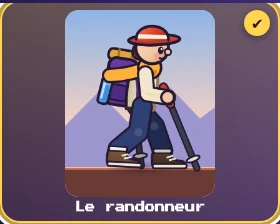
Le randonneur
Chapeau rouge, sac violet, bâtons de marche
Dès le départGratuit · Sans pub · Sans compte · Jouable hors-ligne
Un jeu de randonnée et de trail rétro-moderne : gère ton eau, affronte le vent et la roche, collectionne 63 anecdotes de terrain sourcées et défie ton fantôme en Mode Trail.
Recommandé sur cet appareil
Recommandé sur cet appareil
📱 Télécharger l’APK Android · 13,99 Mo · v0.19.0Recommandé sur cet appareil
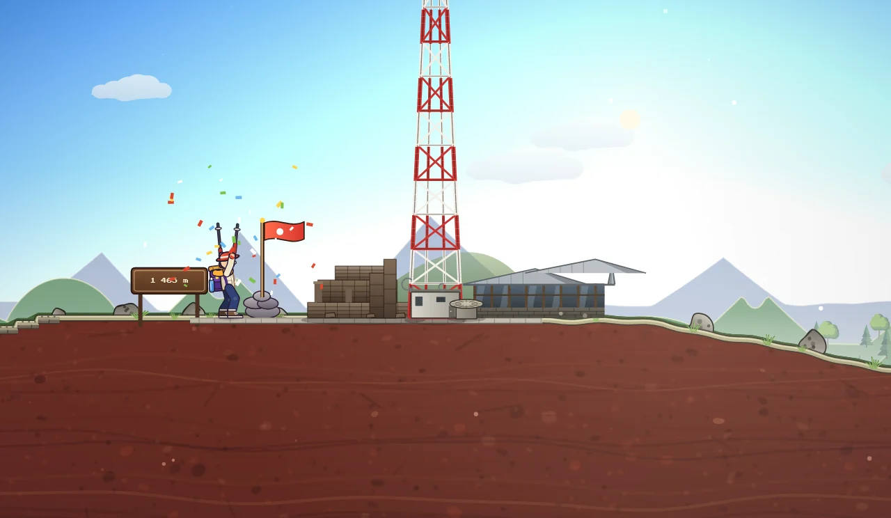
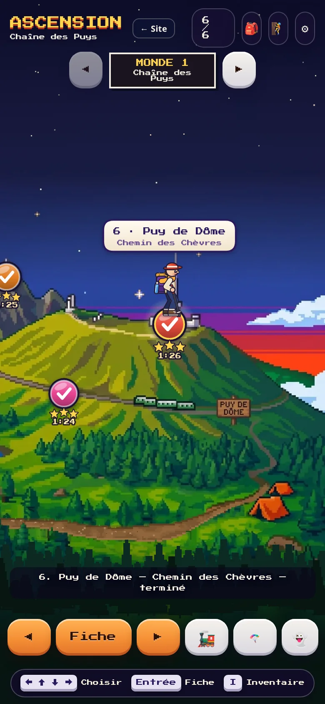
Découvrir
Vingt-et-un sommets réels, aux altitudes, dénivelés et difficultés extraits des données du jeu (sources de terrain citées dans chaque fiche).
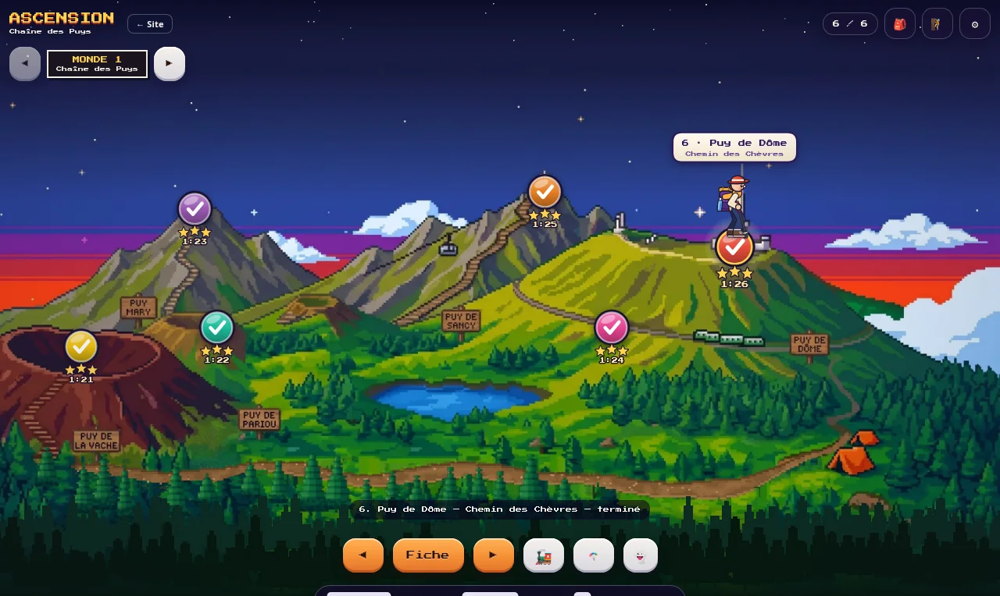
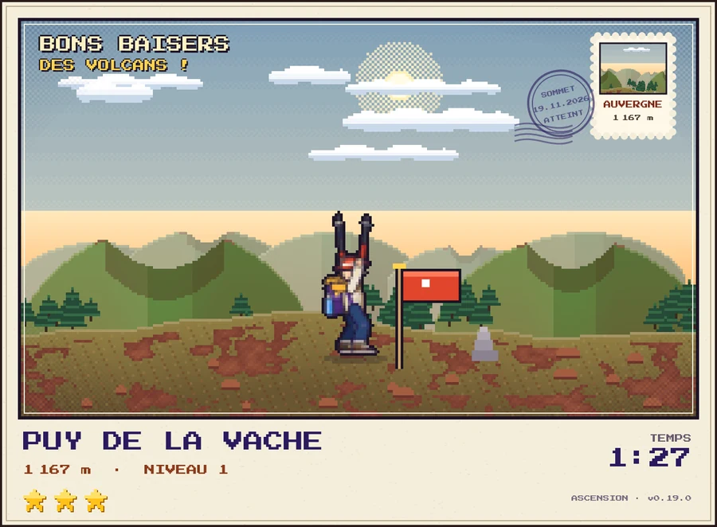
Cônes stromboliens et dômes de trachyte, pouzzolane rouge et noire, pelouses d’altitude. Du puy de la Vache et sa carrière de scories jusqu’au puy de Sancy, toit du Massif central (1 885 m), en passant par le puy de Dôme : temple de Mercure, pylône TDF et voie du Panoramique des Dômes. La Chaîne des Puys – faille de Limagne est inscrite au patrimoine mondial de l’UNESCO depuis 2018.
| N° | Sommet | Altitude | Dénivelé | Difficulté |
|---|---|---|---|---|
| 01 | Puy de la Vache | 1 167 m | +285 m | Facile |
| 02 | Puy de Pariou | 1 209 m | +217 m | Facile à moyenne |
| 03 | Puy MaryDepuis le Pas de Peyrol | 1 783 m | +195 m | Facile à moyenne |
| 04 | Puy de DômeSentier des Muletiers | 1 465 m | +365 m | Courte mais difficile |
| 05 | Puy de SancyPar le Val de Courre | 1 885 m | +568 m | Moyenne |
| 06 | Puy de DômeChemin des Chèvres | 1 465 m | +417 m | Moyenne (plus douce que les Muletiers) |
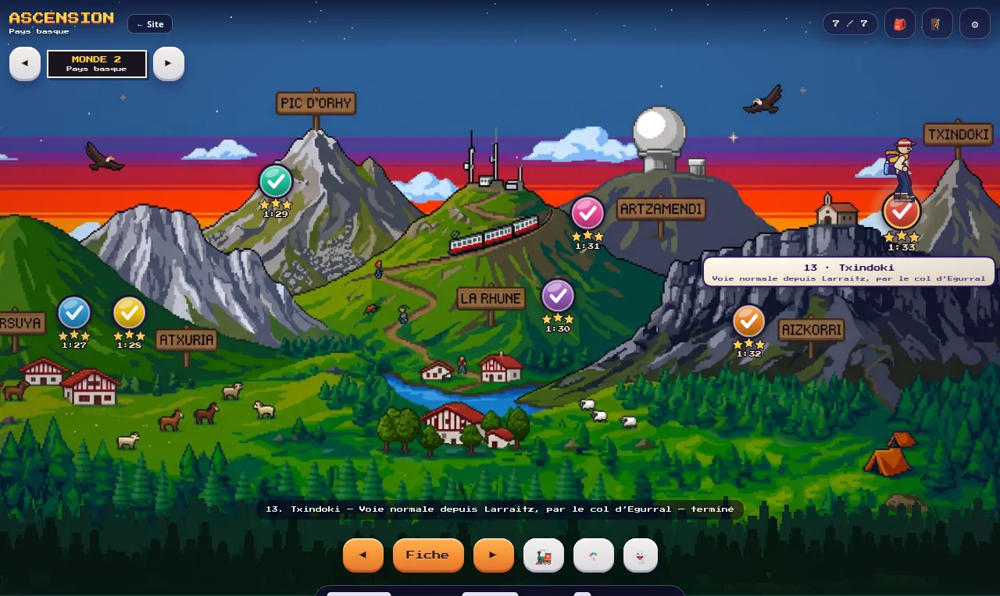
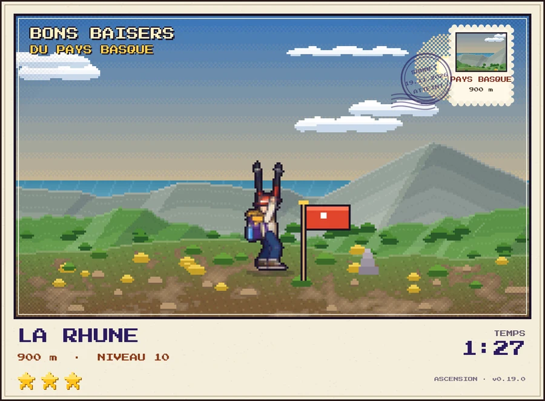
Du dôme herbeux de l’Ursuya (678 m) à la pyramide calcaire du Txindoki (1 342 m). Pottoks, estives de brebis latxa, vautours fauves, et le train à crémaillère de 1924 qui gravit La Rhune au-dessus de l’océan. Après le chemin des Chèvres au puy de Dôme, le voyage en train mène au Pays basque ; après le Txindoki, le parapente ouvre le Jura.
| N° | Sommet | Altitude | Dénivelé | Difficulté |
|---|---|---|---|---|
| 07 | UrsuyaDepuis le quartier Celhay | 678 m | +394 m | Facile |
| 08 | AtxuriaDepuis les Grottes de Sare | 758 m | +620 m | Facile à moyenne |
| 09 | Pic d’OrhyVoie normale depuis le Port de Larrau | 2 017 m | +433 m | Moyenne |
| 10 | La RhuneSentier du train depuis le col de Saint-Ignace | 900 m | +736 m | Difficile |
| 11 | ArtzamendiVoie longue depuis Itxassou / le Pas de Roland | 926 m | +850 m | Difficile (voie longue) |
| 12 | AizkorriVoie classique depuis le sanctuaire d’Arantzazu, par Urbía | 1 528 m | +938 m | Difficile |
| 13 | TxindokiVoie normale depuis Larraitz, par le col d’Egurral | 1 342 m | +940 m | Très difficile |
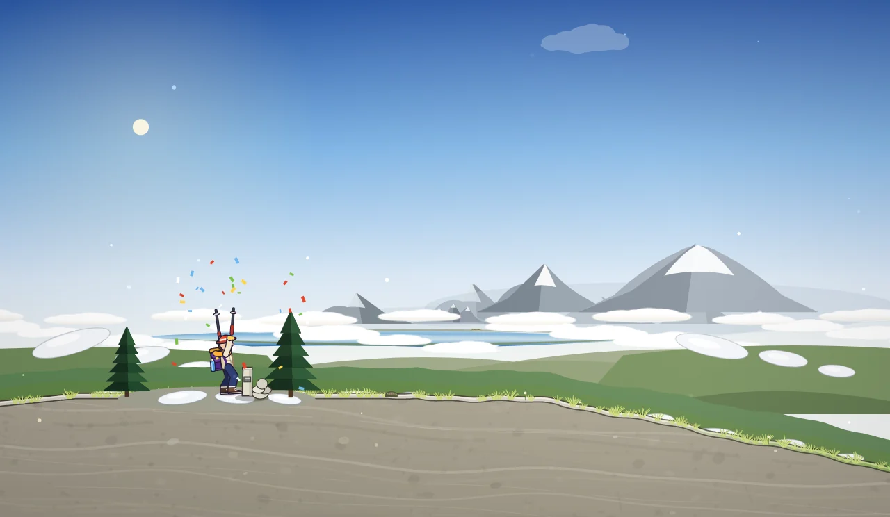
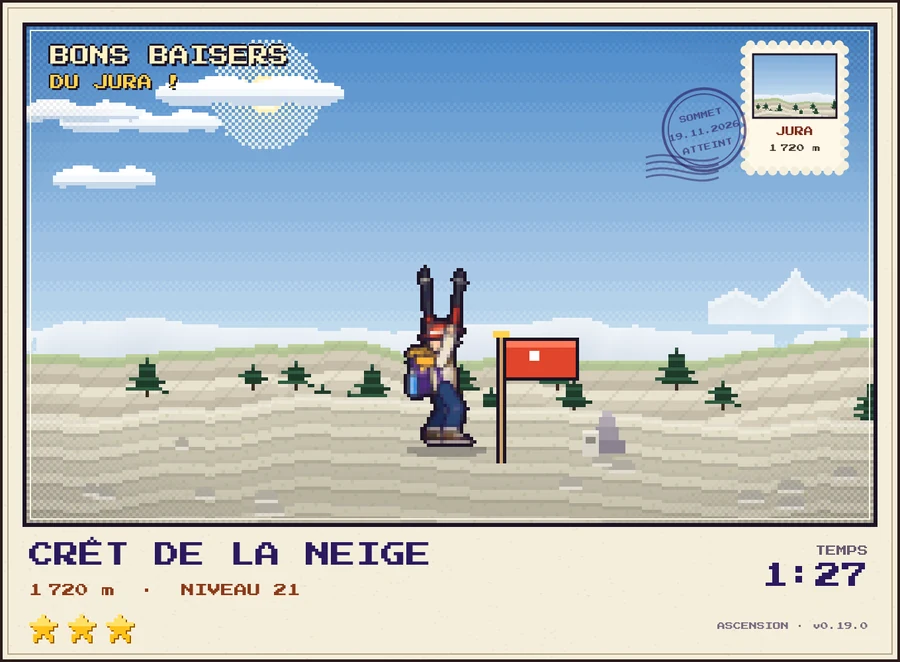
Du Mont Poupet, au-dessus de Salins-les-Bains, jusqu’au Crêt de la Neige (1 720 m), toit usuel du massif. Calcaire, lapiaz et pins à crochets, cirque du Creux du Van, croix haubanée du Grand Colombier, radôme de La Dôle, orages du Reculet, mer de nuages et vue lointaine vers les Alpes.
| N° | Sommet | Altitude | Dénivelé | Difficulté |
|---|---|---|---|---|
| 14 | Mont PoupetBoucle depuis la Place des Vieilles-Salines, Salins-les-Bains | 851 m | +676 m | Difficile à très difficile |
| 15 | Mont d’OrBoucle officielle du PNR du Haut-Jura, depuis Les Granges Raguin (Rochejean) | 1 463 m | +478 m | Moyenne (boucle officielle 3 h 45) |
| 16 | Creux du VanSentier des 14 contours, de Noiraigue au Soliat | 1 464 m | +745 m | Sportive / assez exigeant (J3L) |
| 17 | Grand ColombierAller-retour officiel depuis Culoz, par le GR9 et le belvédère du Fenestrez | 1 534 m | +1 300 m | Très exigeante (fiche officielle, 8 h) |
| 18 | La DôleBoucle depuis le parking des Dappes (balisage suisse, losanges jaunes) | 1 677 m | +589 m | Difficile / moyen selon les topos |
| 19 | Colomby de GexDepuis le col de la Faucille, par les crêtes | 1 688 m | +690 m | Moyenne à difficile (longueur de crête) |
| 20 | Le ReculetCrête de la Haute Chaîne (hauts sommets), souvent enchaîné depuis Lélex | 1 718 m | +1 095 m | Très difficile (crête des hauts sommets) |
| 21 | Crêt de la NeigeDepuis Lélex, ou crête des hauts sommets (même famille que le Reculet) | 1 720 m | +850 m | Très difficile (toit du massif / crête) |
Regarder
Captures réelles de la version 0.19.0 — cartes, sommets et écran Carrière & Cartes.
Deux costumes dès le départ, la traileuse et le trailer après le puy de Mary, les tenues basques après le Pic d’Orhy.

Chapeau rouge, sac violet, bâtons de marche
Dès le départ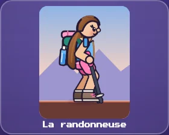
Cheveux longs châtains, short rose, haut bleu
Dès le départ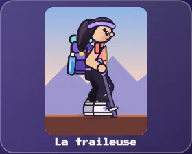
Queue-de-cheval, bandeau lilas, legging noir
Après le puy de Mary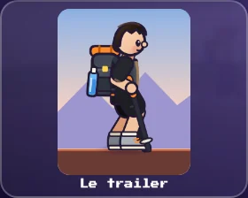
Tee-shirt et short noirs, tête nue, sac anthracite
Après le puy de Mary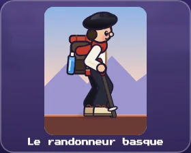
Txapela, chemise blanche, gerriko et foulard rouges
Après le Pic d’Orhy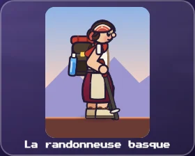
Zapi, jupe et tablier, gerriko, espadrilles
Après le Pic d’OrhyJouer
Les sensations de saut restent identiques sur mobile 120 Hz, PC 300 Hz et écrans standard (29,05 px / 7,20 px à 60 images par seconde).
Trois thèmes originaux générés en temps réel (Web Audio API), sons différenciés par sol (pouzzolane, neige, bois, roche), vent d’altitude, oiseaux et sonnailles.
Affronte ton propre fantôme, chronomètre et écart en direct, pour battre tes records sur le même sentier.
63 objets géologiques, faunistiques et patrimoniaux sourcés, profil altimétrique, et cartes postales exportables en image.
Jouable au pouce, au clavier (AZERTY / QWERTY) et aux manettes Bluetooth ou USB (Xbox, SCUF…), avec vibrations et un mode « Moins d’effets ».
Ta progression reste sur l’appareil. Transfère-la entre PC et smartphone via un fichier .json ou un code qui commence par ASC1-.
Emporter
Trois façons de jouer, toutes gratuites, sans compte et sans boutique d’applications.
PC · Android · iPhone. Lance le jeu tout de suite, puis installe-le sur l’écran d’accueil pour y revenir hors-ligne.
▶ Lancer le jeuInstalle le jeu comme une application native, sans Play Store.
⬇ Télécharger l’APK69351eb9a111807472f9907d3a3f575fe84867657952305c6fbaa3964238d088
Ascension-v0.19.0.apk depuis cette page, puis ouvre le fichier depuis la notification ou Téléchargements.Un seul fichier à enregistrer sur l’ordinateur : un double-clic lance le jeu, même sans connexion.
⬇ Télécharger le .html1223fe094e692a8af7a0d774b8e145f01be77775d84bf9968834d1328924bbc8
Comprendre
Oui. Ascension est gratuit, sans publicité, sans compte et sans achat intégré. Aucune donnée personnelle n’est collectée, transmise ou vendue.
Dans les Réglages du jeu, ouvre « Sauvegarde », puis exporte un fichier .json ou copie un code qui commence par ASC1-. Sur l’autre appareil, importe ce fichier ou colle le code. La progression ne quitte l’appareil que si tu l’exportes toi-même.
Oui, dans Safari (et la plupart des navigateurs iOS). Tu peux aussi ajouter le site à l’écran d’accueil : le jeu s’ouvre comme une application et reste jouable hors-ligne après une première visite.
Android prévient par défaut dès qu’une application n’est pas installée depuis le Play Store. Le jeu est distribué ici, gratuitement, avec son empreinte SHA-256. Le message « fichier potentiellement dangereux » ou « sources inconnues » est donc attendu : ce n’est pas une alerte ciblée contre Ascension.
Oui. Les manettes Bluetooth ou USB (Xbox, SCUF et compatibles) sont reconnues, avec vibrations réglables. Le jeu se joue aussi au clavier (AZERTY ou QWERTY) et au pouce sur écran tactile.
Oui. L’APK et le fichier HTML unique fonctionnent entièrement hors-ligne. La version navigateur / PWA, une fois visitée ou installée, reste jouable sans réseau grâce au cache (le premier chargement demande encore une connexion).